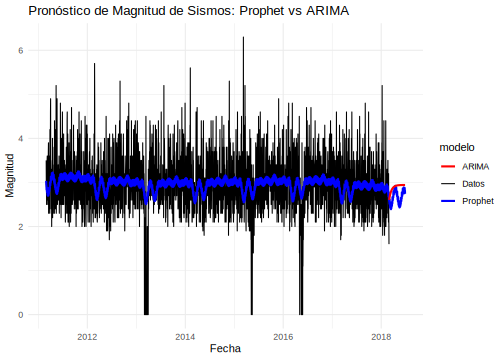

7.3 Gráfica combinada Magnitud
# Cargar las librerías necesarias
library(prophet)
library(forecast)
library(ggplot2)
# Suponiendo que los datos están en el data.frame llamado sismo_4_max_completo
data_magnitud <- data.frame(
ds = as.Date(sismo_4_max_completo$FECHA),
y = sismo_4_max_completo$MAX_MAGNITUD_ML
)
# Ajustar el modelo Prophet con estacionalidad diaria
modelo_magnitud_prophet <- prophet(data_magnitud, daily.seasonality = TRUE)
# Crear el dataframe futuro para predicciones de Prophet
future <- make_future_dataframe(modelo_magnitud_prophet, periods = 120)
pronostico_magnitud_prophet <- predict(modelo_magnitud_prophet, future)
# Ajustar el modelo ARIMA
modelo_arima <- auto.arima(data_magnitud$y)
pronostico_arima <- forecast::forecast(modelo_arima, h = 120)
# Crear un dataframe para los resultados de Prophet
resultados_prophet <- data.frame(
ds = future$ds,
yhat = pronostico_magnitud_prophet$yhat
)
# Crear un dataframe para los resultados de ARIMA
fechas_arima <- seq(max(data_magnitud$ds) + 1, by = "day", length.out = 120)
resultados_arima <- data.frame(
ds = fechas_arima,
yhat = pronostico_arima$mean
)
# Combinar los resultados con los datos originales
resultados_comb <- rbind(
data.frame(ds = data_magnitud$ds, y = data_magnitud$y, modelo = "Datos"),
data.frame(ds = resultados_prophet$ds, y = resultados_prophet$yhat, modelo = "Prophet"),
data.frame(ds = resultados_arima$ds, y = resultados_arima$yhat, modelo = "ARIMA")
)
# Graficar los resultados
ggplot() +
geom_line(data = resultados_comb[resultados_comb$modelo == "Datos", ],
aes(x = ds, y = y, color = modelo), size = 0.5) +
geom_line(data = resultados_comb[resultados_comb$modelo == "Prophet", ],
aes(x = ds, y = y, color = modelo), size = 1) +
geom_line(data = resultados_comb[resultados_comb$modelo == "ARIMA", ],
aes(x = ds, y = y, color = modelo), size = 1) +
labs(title = "Pronóstico de Magnitud de Sismos: Prophet vs ARIMA",
y = "Magnitud", x = "Fecha") +
theme_minimal() +
scale_color_manual(values = c("Datos" = "black", "Prophet" = "blue", "ARIMA" = "red"))## Warning: Using `size` aesthetic for lines was deprecated in ggplot2 3.4.0.
## ℹ Please use `linewidth` instead.
## This warning is displayed once every 8 hours.
## Call `lifecycle::last_lifecycle_warnings()` to see where this warning was
## generated. En general, ambos modelos parecen ser adecuados para capturar la tendencia general de la magnitud de los sismos.